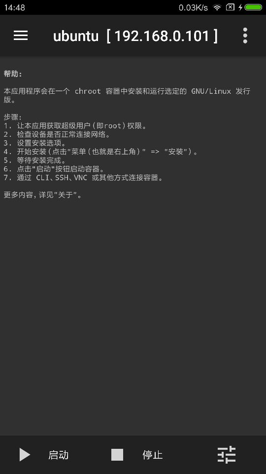
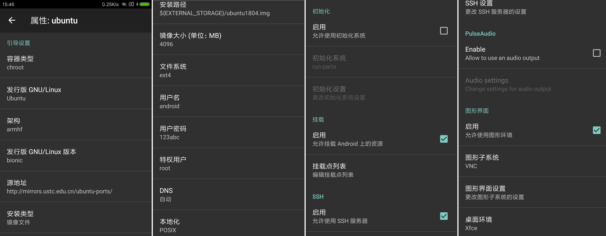
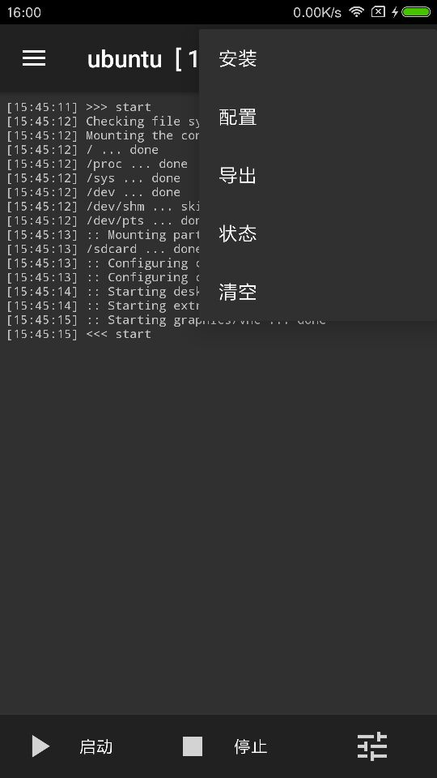

最近手上有闲置的Android手机，想想如果能拿来搭个服务器什么的总比吃灰强。一番尝试找到了在上面部署ubuntu的方法，在此记录一下部署的方法。
下载
下载并安装 Linux Delpoy
配置
参数设置
进入linux deploy后开始界面如下：

点击右下角更改配置，安装ubuntu18.04时配置如下：

国内选择中科大的源速度比较快
1 | http://mirrors.ustc.edu.cn/ubuntu-ports/ |
部署后的ubuntu如果需要访问Android设备本地内容，可点击 挂载点列表增加挂载点,
将Android设备/sdcard 挂载到 ubuntu的/mnt/sdcard方式如下：1
/sdcard:/mnt/sdcard
如需使用图形功能，可勾选允许使用图形环境
部署
配置完成后切换到初始页面，选择安装，安装完成后点击启动，之后使用配置的ssh信息即可连接到部署的ubuntu中
